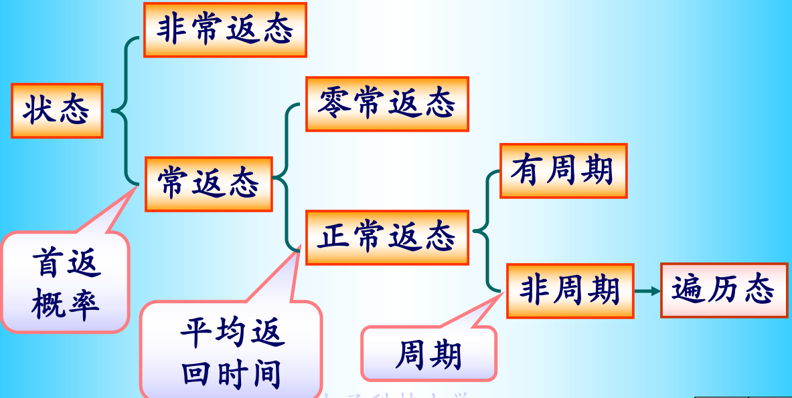

基本定义
代数是定义在样本空间的集族F上的对逆运算和可列并运算封闭的代数，即F是的幂集的子集，并且F对逆运算和可并列封闭
把(, F)称为可测空间， 引入定义在F上的函数P，若P满足，P()=1，，且任意A交集为零，P函数和并运算可交换，则称(, F, P)为概率空间
联合概率分布
基本流程：
已知(X1, X2)的联合概率密度f(x1, x2)，并且已知y1 = g1(x1, x2), y2=g2(x1, x2)，求(y1, y2)的联合概率密度分布函数
一般可以通过定义计算
倘若
g1, g2存在反函数, x1 = h1(y1, y2), x2 = h2(y1, y2)
反函数具有连续的一阶偏导数
x对y的雅克比行列式J存在
则所求的函数
特征函数
常见分布的特征函数：
二项分布B(n, p), ，其中q = 1 - p
泊松分布P()，
指数分布Exp()，
正态分布N()，
标准正态N(0, 1)，
性质：
若Y=aX+b，则
特征函数在R上一致连续，非负定
特征函数和概率分布是一一对应的
若X1,X2...Xn相互独立，且，则
若二维随机变量（X,Y）的特征函数为，则Z=aX+bY+c的特征函数为
正态过程
已知n维随机向量X=(X1, X2, ... Xn)及其均值向量和协方差矩阵，其联合概率密度函数为，其特征函数为，概率密度仅在时有意义
二维正态分布的密度函数为
一个随机过程的任意有限维联合分布都是正态分布时，该过程为正态过程
若有，则
维纳过程
独立过程 => ，相互独立
独立增量=> 任意增量相互独立
平稳独立增量=>独立增量+增量的分布仅由增量本身确定（即增量分布(X(s+t)-X(s))只与t有关）
满足以下三个条件的随机过程W(t)称为维纳过程：
W(0)=0
W(t)是平稳独立增量过程
维纳过程的性质：
维纳过程是正态过程
泊松过程
满足以下三个条件的随机过程N(t)称为参数为的齐次泊松过程：
N(0)=0
N(t)是平稳独立增量过程
齐次泊松过程的性质：
事件到达的时间间隔为，其中相互独立且满足参数为的指数分布（这是个充要条件）
假设N(t)是参数为的齐次泊松分布过程，是相互独立同分布的随机变量序列，且Y(n)与N(t)也相互独立，则称为复合泊松过程，其满足以下性质：
假定Y(n)的特征函数为f(u)，则X(t)的一维特征函数为
若Y(n)存在二阶矩，则
均方微积分
均方连续
对于二阶矩过程X(t)， 均方连续 在处连续 在整个上连续
均方导数
对于普通函数，当下述极限存在时，称其在(s, t)处广义二阶可导
对于二阶矩过程X(t),的一阶偏导存在，二阶混合偏导存在且连续
X(t)均方可导 在处广义二阶可导
X(t)均方连续
性质：
,
均方积分
在同一个区间上，X(t)均方连续X(t)均方可积
对于二阶矩过程X(t)，f(t)X(t)在[a,b]上均方可积
二重积分存在，且等于
性质：
若X(t)在[a,b]上连续，Y(t)是其均方不定积分，则
平稳过程
严平稳过程 n维分布与参数无关
宽平稳过程
二阶矩过程
均值函数为常数
自相关函数仅与时间间隔相关，与时间起点和终点无关
对于实平稳过程X(t)，均方连续 在处连续 处处连续
对于实平稳过程X(t)， 在处二阶可微 X(t)均方可导 均方导数过程为平稳过程
实平稳过程的性质：
非负定
X(t)是周期为T的周期平稳过程 是周期为T的周期函数
均方可微 , , ,
均方可微 与不相关，即，
均方连续 ,
各态历经性
对于平稳过程X(t)，其
时间平均，
时间相关函数
均方遍历性（均值的各态历经性）
相关函数的各态历经性
各态历经过程 均值和相关函数都具有各台历经性的平稳过程
X(t)的均值具有各态历经
X(t)的均值具有各态历经
X(t)的均值具有各态历经性
对于X(t)，若其4阶矩存在，则其相关函数具有各态历经性 ，其中
若服从零均值4维正态分布，则
谱分析
自相关函数和功率谱密度互为一对傅里叶变换
马尔科夫过程
吸收状态 不再转移到其他状态的状态
反射状态 永不会停留的状态
弹性壁 俩状态只相互转移
齐次马氏链的遍历性 存在，且与i无关
对于一个具有遍历性的马氏链，若且，则称为齐次马氏链的极限分布，此时是转移矩阵的特征向量、不动点，是方程的满足的唯一解
马氏链是遍历的
对于齐次马氏链，马氏链是平稳的 对于其转移矩阵P，存在平稳分布V，使得，
刻画状态类型的特征量
首达概率为从状态出发，经过步转移，图中不到达状态，最终达到状态的概率
最终概率
首达时间 （其实算的是步数）
当可从状态转移到状态时，称为从状态i出发，达到状态j的平均转移步数，特别的，当i=j时，称为状态i的平均返回时间
状态类型的分类
常返\非常返 对于状态及其最终返回概率，若，则称状态i是常返的，否则称其为非常返的（滑过的）
正常返\零常返 对于常返状态及其平均返回时间，若，则称状态i是正常返的，否则称其为零常返的。
周期\非周期 对于状态，若正整数集非空，此时，定义，称为状态的周期，若，则称状态是非周期的
遍历态 非周期的正常返态

状态是常返的 ，即状态的最终返回概率为1
状态是非常返的
常返状态是零常返的 若也是零常返的，则
常返状态时遍历的的
按照互通的关系可以把所有的状态划分成多个状态集合，每个状态集合中的状态具有相同的类型，即（非常返、零常返、遍历、正常返且具有相同周期）
若状态和状态互通，且是常返态，则
若状态是常返的，且，则
闭集 若状态空间E中的一个子集C，满足，则称C为闭集
若闭集C中仅有一个元素，则称C为吸收状态
若闭集C中不包含非空的闭真子集，则称C是不可约的
若E是不可约的，则该马氏链称为不可约马氏链
马氏链的所有常返态构成一闭集
不可约马氏链中的状态只能全部是常返态或者全部都是非常返态
C是闭集
i为吸收态
齐次马氏链不可约 它的任意两个状态均互通
齐次马氏链的状态空间可以唯一地分解为非常返态集合和多个常返态组成的不可约闭集
若马氏链的状态空间E是有限集合，则称其为有限马氏链，其满足以下性质：
所有非常返态组成的集合不是闭集
没有零常返态
必有正常返态
状态空间可以分解为非常返集合常返闭集
吸收链
若马氏链至少含有一个吸收状态，且每个状态都可达吸收状态，则称其为吸收状态
重排状态索引可以将转移矩阵变为
其中S重排为非吸收状态矩阵，为吸收状态矩阵，令，称为基矩阵，令
基矩阵中的元素为非吸收状态到非吸收状态的平均转移步数，第行元素之和是从非吸收状态出发，被某个吸收状态吸收之前的平均转移步数
矩阵中的元素表示从非吸收状态出发，被吸收状态吸收的概率